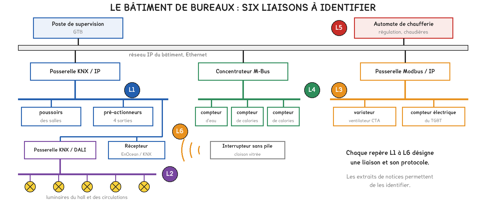
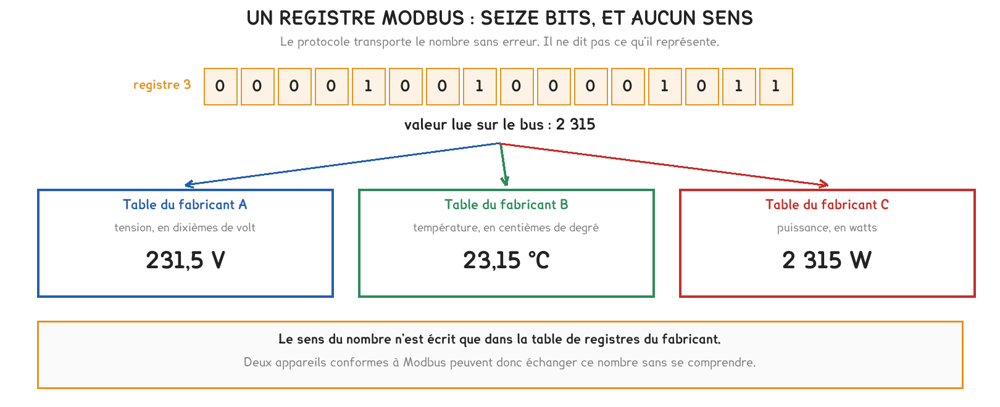
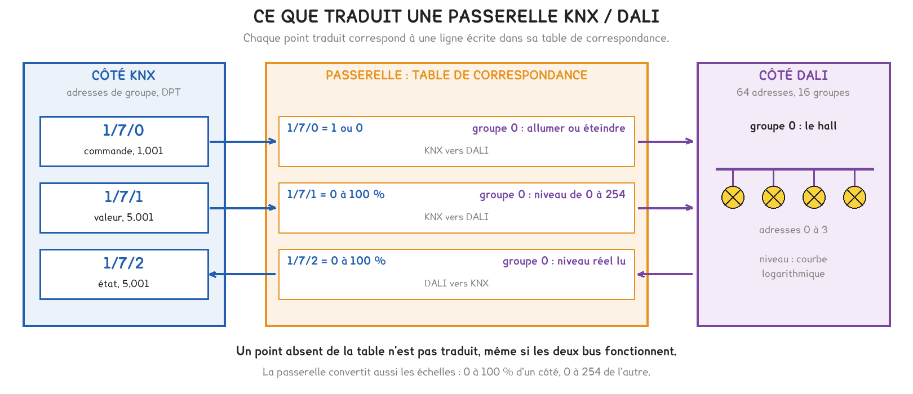
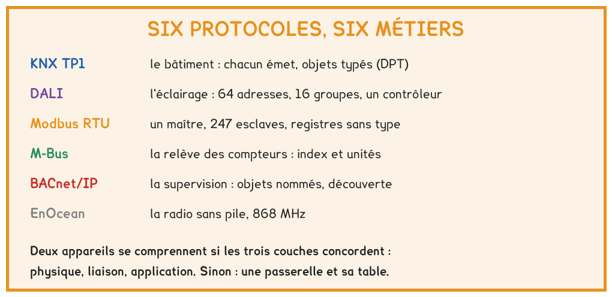

BTS FED option C · 1re année
Deux compteurs conformes à Modbus, et une supervision qui affiche une puissance fausse sans signaler la moindre erreur. Ce qui fait que deux appareils se comprennent tient au sens des données, et non au nom du protocole.
6 questions · 4 exercices · 2 replis · 5 figures
Savoirs travaillés
Un bâtiment de bureaux réunit six systèmes, reliés à la supervision par le réseau IP. Chacun parle sa propre langue : il a fallu les identifier à partir des notices des appareils.
Puis un cas réel : un compteur remplacé par un autre, conforme lui aussi, et une supervision qui affiche une puissance fausse sans aucune alarme. Ce cas explique ce qu’est l’interopérabilité, et ce qu’une passerelle peut ou ne peut pas faire.
Un protocole fixe trois choses : sur quel support les données circulent, qui prend la parole et quand, sous quelle forme les données sont écrites.
| Prise de parole | Principe | Exemples |
|---|---|---|
| maître unique | un appareil interroge les autres à tour de rôle | Modbus RTU, M-Bus, DALI |
| chacun émet | tout appareil émet quand il en a besoin ; le bus arbitre | KNX TP1 |
| client et serveur | un client interroge un serveur sur un réseau IP | BACnet/IP, Modbus TCP |

| Protocole | Métier | Ce qui le désigne dans une notice |
|---|---|---|
| KNX TP1 | le bâtiment | paire torsadée TBTS, programmation par bouton |
| DALI | l’éclairage | deux fils sans polarité, 64 adresses, 16 groupes |
| Modbus RTU | l’équipement technique | RS-485, esclaves de 1 à 247, table de registres |
| M-Bus | la relève des compteurs | deux fils alimentés par le maître, index et unités |
| BACnet/IP | la supervision | objets typés, découverte automatique |
| EnOcean | la radio sans pile | 868 MHz, énergie produite par l’appui |
Pour aller plus loin
Un compteur M-Bus transmet son index, un nombre qui ne redescend jamais, accompagné de son unité. Si la relève s’interrompt, rien n’est perdu : à la reprise, le concentrateur lit la valeur courante.
Un compteur à impulsions ne transmet que des incréments, comptés par le récepteur. Une panne du récepteur fait perdre les impulsions émises pendant ce temps, et l’écart avec le compteur réel ne se corrige que par un recalage manuel.

Modbus transporte des registres de seize bits sans type ni unité. Le contrôle d’erreur vérifie que le nombre arrive intact, jamais ce qu’il signifie. Le sens n’est écrit que dans la table de registres du fabricant.
« Les deux appareils sont en Modbus, ils vont se comprendre. » C’est faux dès que les tables de registres diffèrent : un courant en centièmes d’ampère peut être affiché comme une puissance en watts, sans aucune alarme.
Pour aller plus loin
La méthode consiste à lire une valeur connue. La tension du réseau, voisine de 230 V, doit apparaître quelque part sous la forme 2 300 si elle est écrite en dixièmes de volt. Le courant lu doit concorder avec une mesure à la pince, et la puissance avec le produit de la tension et du courant.
Si la valeur connue apparaît dans le registre voisin de celui qui était attendu, la configuration présente un décalage d’une unité : les documentations ne numérotent pas toujours les registres comme le protocole.

L’interopérabilité tient au typage des données : KNX la garantit par ses types de points de données, BACnet par ses objets normalisés. Une passerelle ne devine rien : un point absent de sa table n’existe pas pour l’autre système.
Chaque ligne de la table porte une adresse, un type, un sens de circulation et sa correspondance de l’autre côté. La passerelle convertit aussi les échelles : de 0 à 100 % côté KNX, de 0 à 254 côté DALI.

Exercice · D1-2
La notice d’un compteur de calories indique : « interface de télérelève à deux fils non polarisés, alimentée par le maître ; transmission de l’index et de son unité ; adresse primaire réglable ».
De quel protocole s’agit-il ?
Exercice · D1-2
La table d’un compteur Modbus indique : registre 0, tension en dixièmes de volt ; registre 1, courant en centièmes d’ampère. La supervision lit 2 296 dans le registre 0 et 1 275 dans le registre 1.
Estimer la puissance appelée par ce départ monophasé, avec un facteur de puissance voisin de 1.
Exercice · D1-2
Une liaison Modbus RTU dessert déjà 12 variateurs. Combien d’esclaves reste-t-il possible d’y adresser, au plus ?
Exercice · B8-1
Un luminaire DALI signale un défaut de lampe, mais la GTB, reliée par une passerelle KNX / DALI, n’en reçoit rien. Expliquer pourquoi en trois ou quatre lignes, et indiquer la correction.
La séance suivante ouvre les adresses de groupe : ce que KNX met dans sa couche du haut, les objets typés que Modbus n’a pas. En atelier, deux protocoles seront mis en dialogue par une passerelle, à partir d’une table de correspondance.
Cette page rappelle la séance. Elle ne remplace pas le polycopié et ne donne aucun corrigé. Tous les calculs se font dans votre navigateur ; rien n'est enregistré.